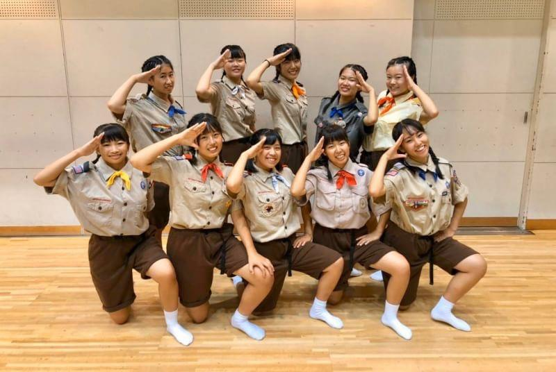
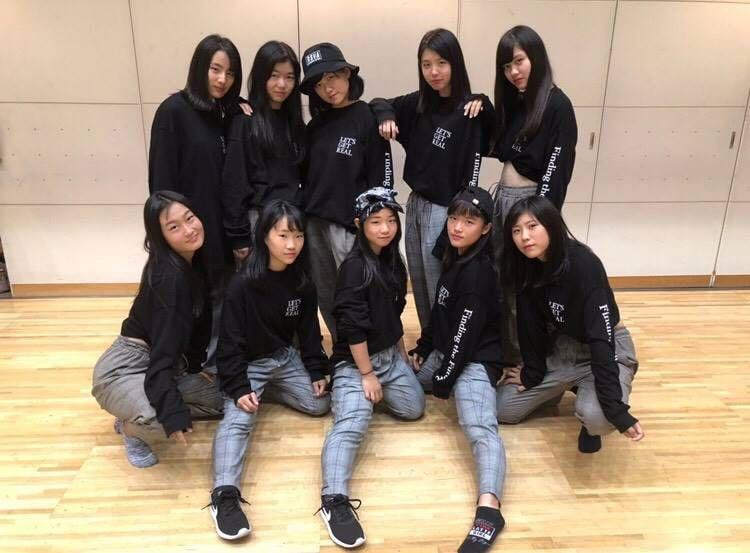
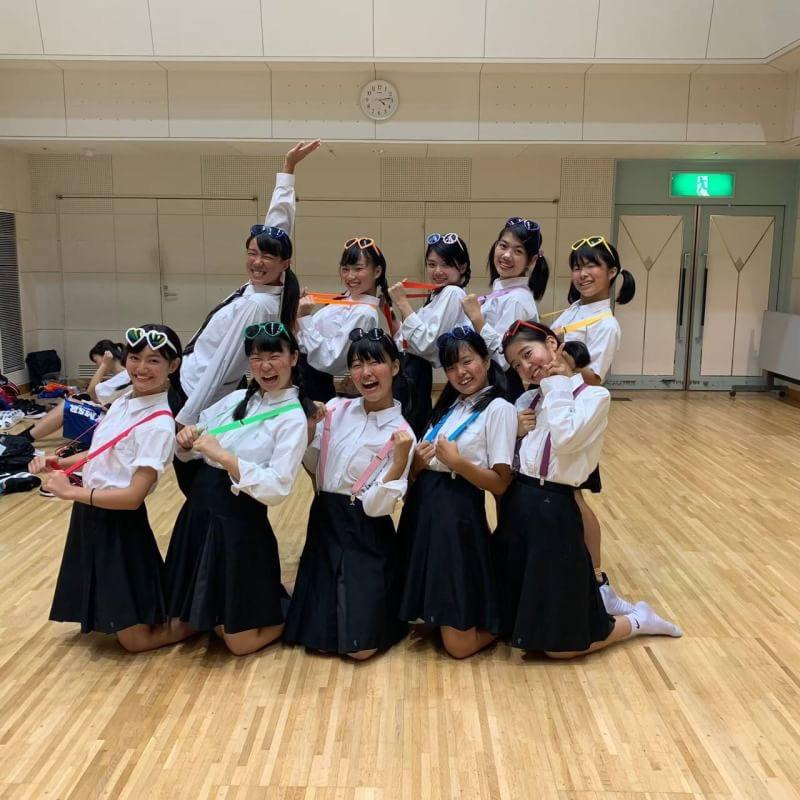

第１２回日本高校ダンス部選手権 近畿・中国地方予選
2019/8/1 第１２回日本高校ダンス部選手権
近畿・中国地方 Ｂブロック @神戸文化ホール
ダンス部の年に１度の大きな大会「ダンススタジアム」の近畿・中国地方の予選が行われました！
この大会は２人〜１２人のスモールクラスと１３人〜４０人のビッククラスの２クラスに分かれていて、山城高校は男子がスモールクラス、女子がビッククラスという形で出場しました！
女子は２月にオーディションが行われ、本格的な練習は４月から始めており、約半年この大会に懸けてきました。
テーマは「競馬」で騎手と観客に分かれて踊ります。馬は出ていないけど、競馬の緊迫感や競馬の夢や希望が満ち溢れた作品です！
男子はブレイクダンスを強みとしており、一人ひとりのスキルが武器です。
テーマは「茶道」でアクロバティックな大技も多くとても迫力がある作品です！
３年生は勉強との両立で忙しい中、チームを引っ張ってくださいました！
夏休みも返上して朝から夜まで全てを注ぎ込み、
たった２分半に懸けた夏。
その結果は
スモールクラス 準優勝！！
ビッククラス 優勝！！！
で見事両クラスで全国大会への出場を決めることができました！
沢山の不安もあったけどきつい練習を乗り越えてこの結果に繋がったと思うので、とても自信になりました！
アドバイスを沢山くださった先輩、同級生、応援して頂いた方全てに感謝の気持ちでいっぱいです！ありがとうございました☺
これからも山城高校ダンス部は進化し続けていくので、応援よろしくお願いします！
山城祭、最終日にダンス部のパフォーマンスを体育館にて行いました！
各学年で踊ったり、ジャンルに分かれてダンスを披露しました。
1年生、2年生、3年生のみんなで踊ることができて良い思い出になりました！
見に来てくれた人が名前を呼んだりして盛り上げてくれたので本当に楽しみながら踊ることができました☺
音源や照明な作業も自分たちでやりました。
普段やらないような裏方の仕事もたくさん経験できて良かったです。
来年もみんなで協力して最高のパフォーマンスを作り上げたいです！
SKYフェスティバル
2019年9月15日 ＠パルスプラザ
SKYフェスティバルに一年生３チームが出演させていただきました。
大会の緊張感ある雰囲気とは違い、伏見の皆さんや会場に来られた方々の笑顔で歓迎してくださる温かい雰囲気の中で発表できました☆彡
私たちはダンスを通して、ふれあうことが出来たと思います。
たくさんの人達とふれあうことの大切さを学ぶとても良い機会をいただけたと思います。
このメンバー・チームで、この作品を発表するのは最後だったので、悲しい気持ちもありましたが、作品を通して、たくさんの貴重な機会をいただくことができました☺
2019年9月14日 ＠エル・シアター
山城高校ダンス部1年生は、第5回全国高等学校ストリートダンスバトルに出場させてもらいました。
ジャズやロックなどダンスのジャンルは幅広く、ハイレベルな作品が多く見られました！
ぶつかり合うだけでなくお互いの作品に賛称しあう温かい会場でした。山城高校は3チームで出場し、どのチームも自信をもって演技ができました！
また、他校さんの作品の中や審査員であるD-BURSTさんからの言葉から沢山学ぶことがあり、今後のレベルアップへ繋がるようにダンスの改善の必要性も感じました。
はじめてダンスで他のチームと対決するということを経験して踊りきったときの達成感や負けたときの悔しさを感じられました。
この経験を次に活かしたいと思います☺

2019年9月8日 ＠北市民プラザ
山城高校ダンス部1年生は、北区民フェスティバルに全員で出演させていただきました！
これは私たちの高校がある北区で開催されるフェスティバルで、山城高校を知っている方にも知らない方にも、私たちのダンスを見てもらえる良い機会になったと思います。
このイベントは今年の山城高校1年生のみんなで出演させていただいた初めてのイベントでした！
初めて学校外で作品を披露させてもらい、地域の方々や関係者の方々から温かい言葉をいただき、みんなこのイベントを通して踊ることにやりがいを感じました。
このイベントで初めて3つのチームに別れて作品を披露しました。
その3つのチームの紹介をします！
1つ目のチーム名は「Astrum」です！

テーマは「探検隊」。起承転結のあるダンス構成を心がけました。
曲のサビではワックというジャンルのダンスを取り入れたり、曲調が変化し恐竜を倒す振りがでてきてたりなどチームAstrumらしさのある楽しい振り付けとなっていました。
また、ダンスだけでなく探検隊ひとりひとりの衣装にも注目してほしい作品です☆彡
2つ目ののチーム名は「すぷらっしゅ」です！

高校生らしいフレッシュさとダンス部ならではのかっこよさを表現しました。
また曲にもこだわって1曲目には重低音が効いたラップ調の曲を、2曲目にはポップで明るい曲をと、1つの作品の中でギャップを付けたのも魅力の1つです☆彡
3つ目のチーム名は「MAKS」です！

「学校生活☺」をテーマに色々なジャンルの動きやパキパキとした動きを取り入れました。
一曲目は、授業の楽しい雰囲気に、二曲目は、放課後の大人かっこいい雰囲気に構成しました。1曲目と2曲目のギャップが魅力的な作品です☆彡
第1回日本高校ダンス部選抜大会出場
2019年11月4日 @横浜アリーナ
第1回日本高校ダンス部選抜大会出場！！
過去3年間の結果を参考に全国で30校を選抜し、高校ダンス部の頂点を決める大会に山城高校が選ばれました。
３年生の先輩方が引退なさったので新しく１、２年生から16人をオーディションで決めました。
正直、練習期間が約1ヶ月間と短かったので不安でしたが、キャプテン、副キャプテンが先頭に立ってみんなを引っ張っていってくれたおかげで
結果はなんと・・・・・・7位！！
それを知った時、あの時しんどい練習を頑張って良かったなと思いました。最後の最後まで応援してくださった皆さん、ありがとうございました(^^)
そして、この大会に出場できたのは先輩方のおかげです。
アドバイスを沢山くださったり、色んなことを教えてくださったり...
本当に感謝の気持ちでいっぱいです！
ありがとうございました！！
この大会を通して課題も沢山見つかったのでまた明日からの練習を頑張ります。
一年後、また後輩たちが同じ場所で踊っていますように！！
◎令和元年度京都府公立高等学校テニス大会 個人の部 (10月27日:小畑川)
優勝 村上 らん(1)
第３位 土屋すみれ(2)
準決勝 村上 らん(1) 61 土屋すみれ(2)
決勝 村上 らん(1) 62 浅田亜花音(1)(久御山)
３位決定戦 土屋すみれ(2) 60 飛鳥井 翠(2)(洛北)
...以上の結果と、京都府高校選手権の結果により、
村上 らん(1)、土屋すみれ(2)、松本 胡桃(1)の３名が、
来年２月の、近畿公立高等学校テニス大会への出場が決まりました。
◎亀岡ジュニア秋季テニス大会 女子ダブルス (10月27日:亀岡)
優勝 箕浦 遥(2)･松本 胡桃(1)ペア
準優勝 平良 真琴(2)･田中 帆夏(2)ペア
第３位 岡田 美苑(1)･西田 麻緖(1)ペア
...賞状と、賞品をいただいて、みんな喜んでいました。
◎京都府高等学校テニス選手権大会
女子シングルス ベスト64 土屋すみれ(2)
村上 らん(1)
松本 胡桃(1)
女子ダブルス ベスト32 土屋すみれ(2)･村上 らん(1)ペア
平良 真琴(2)･田中 帆夏(2)ペア
箕浦 遥(2)･松本 胡桃(1)ペア
...12月の京都招待大会への出場は、惜しくも叶いませんでしたが、
みんな良く頑張りました。


剣道部試合結果
令和元年11月3日に行われた、京都府高等学校剣道新人大会において、男子団体、女子団体ともベスト１６となりました。
目標としているベスト８には残念ながら届きませんでしたが、次の大会目指してさらに頑張っていきます。
梅小路市民ふれあいステージ2019に出演しました！
女子テニス部 活動報告(９月)
◎令和元年度全国選抜高校テニス大会京都府大会
（9,21 向島西テニスコート 9,22 丹波自然運動公園テニスコート）
２Ｒ 山城 ３－０ 京都精華学園
３Ｒ 山城 ３－０ 桃山
４Ｒ 山城 ０－３ 京都外大西
順位戦１回戦 山城 １－３ 京都橘
順位戦２回戦 山城 ３－２ 京都女子
結果：団体戦 ベスト８(第７位)
第５シードを守ることができず、
12月の京都招待テニス大会への出場は叶いませんでしたが、
みんなよく頑張りました。
◎亀岡ジュニア秋季テニス大会女子シングルス（9,23 亀岡運動公園）
優勝 土屋すみれ(２年)
準優勝 村上 らん(１年)
第３位 松本 胡桃(１年)
◎9,28 明石城西(兵庫)、葺合(兵庫)、池田(大阪)と練習試合
明石城西高校を会場に、団体戦形式の練習試合を行いました。
カテゴリ一覧
主要リンク